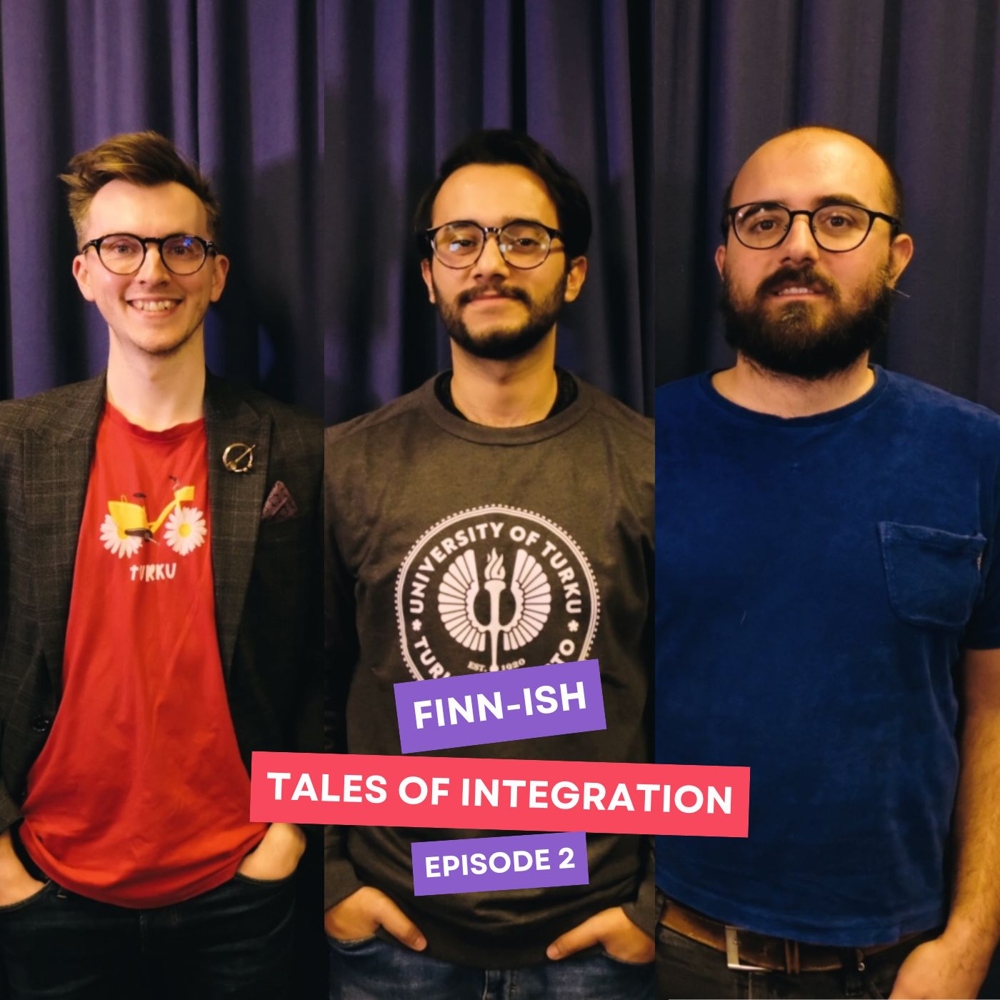
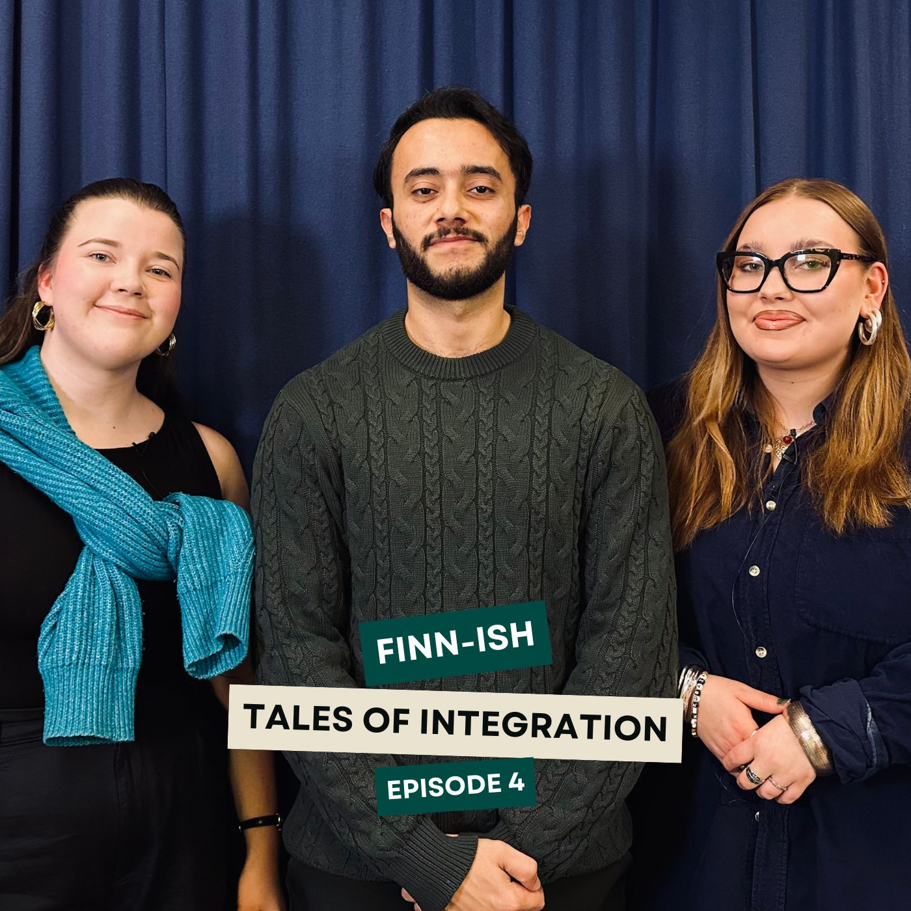
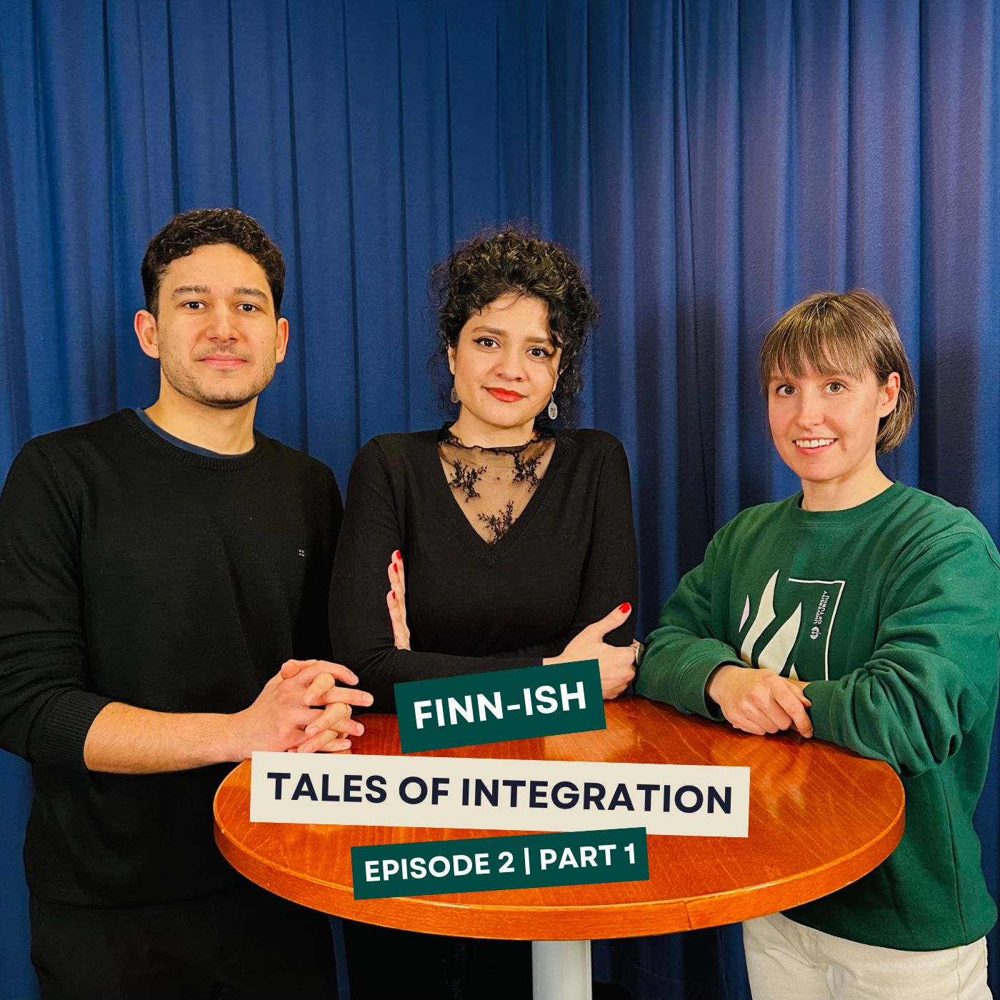
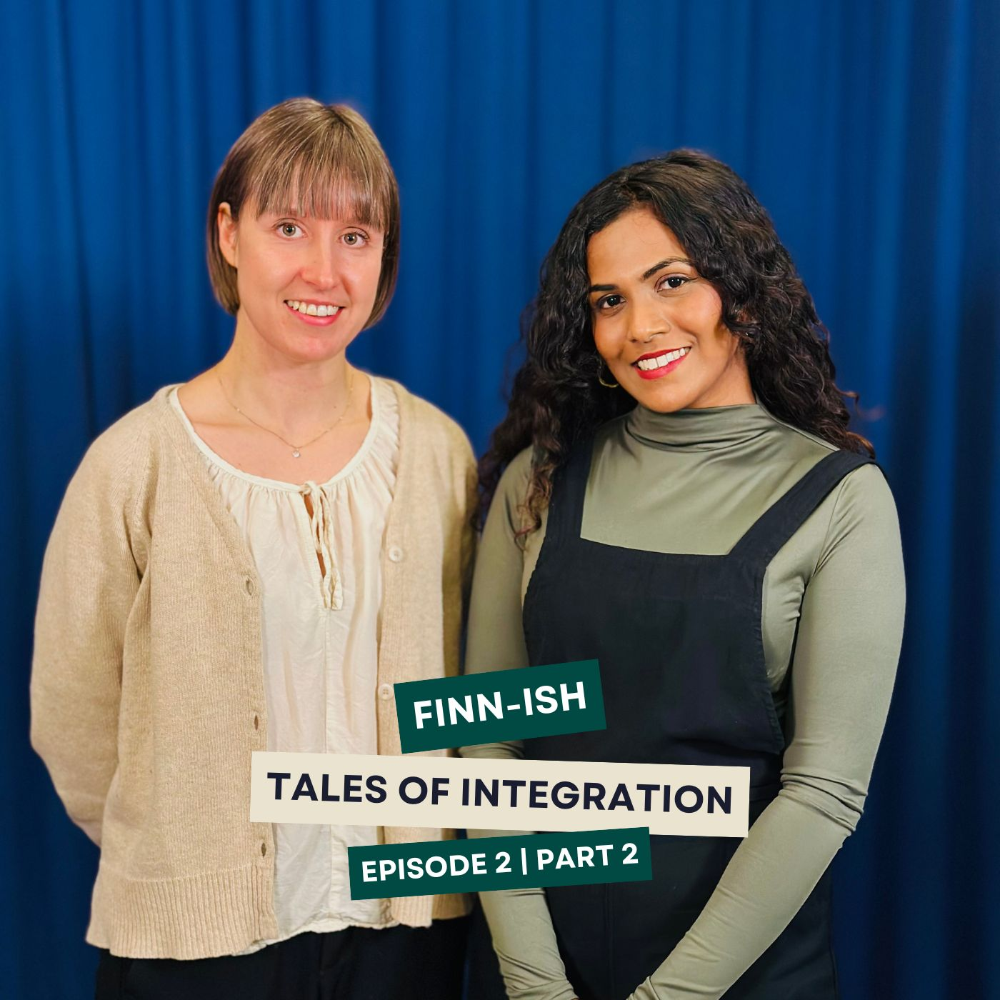
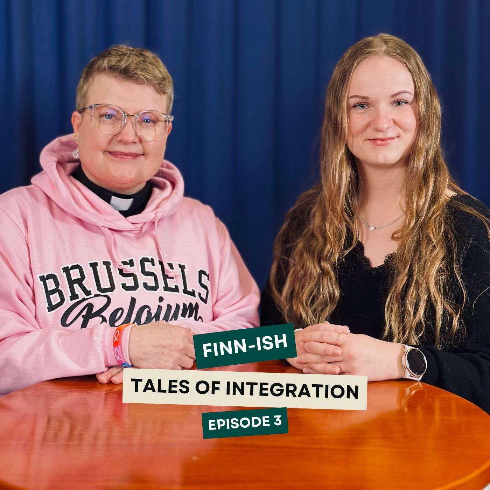
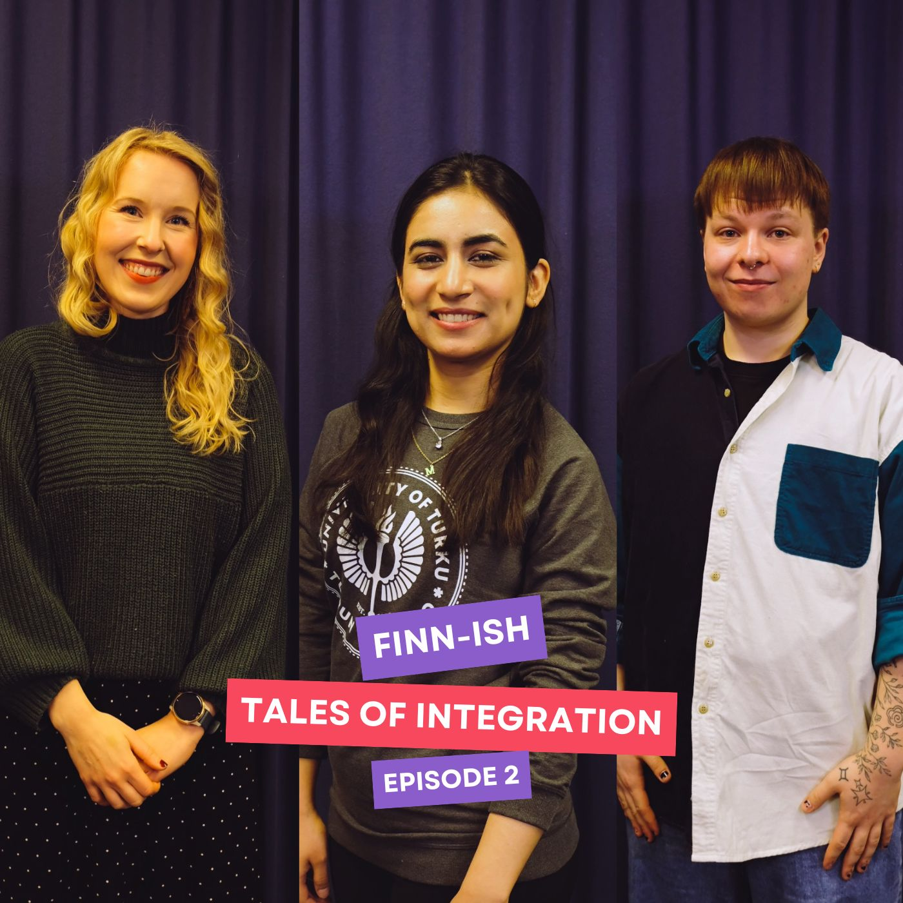
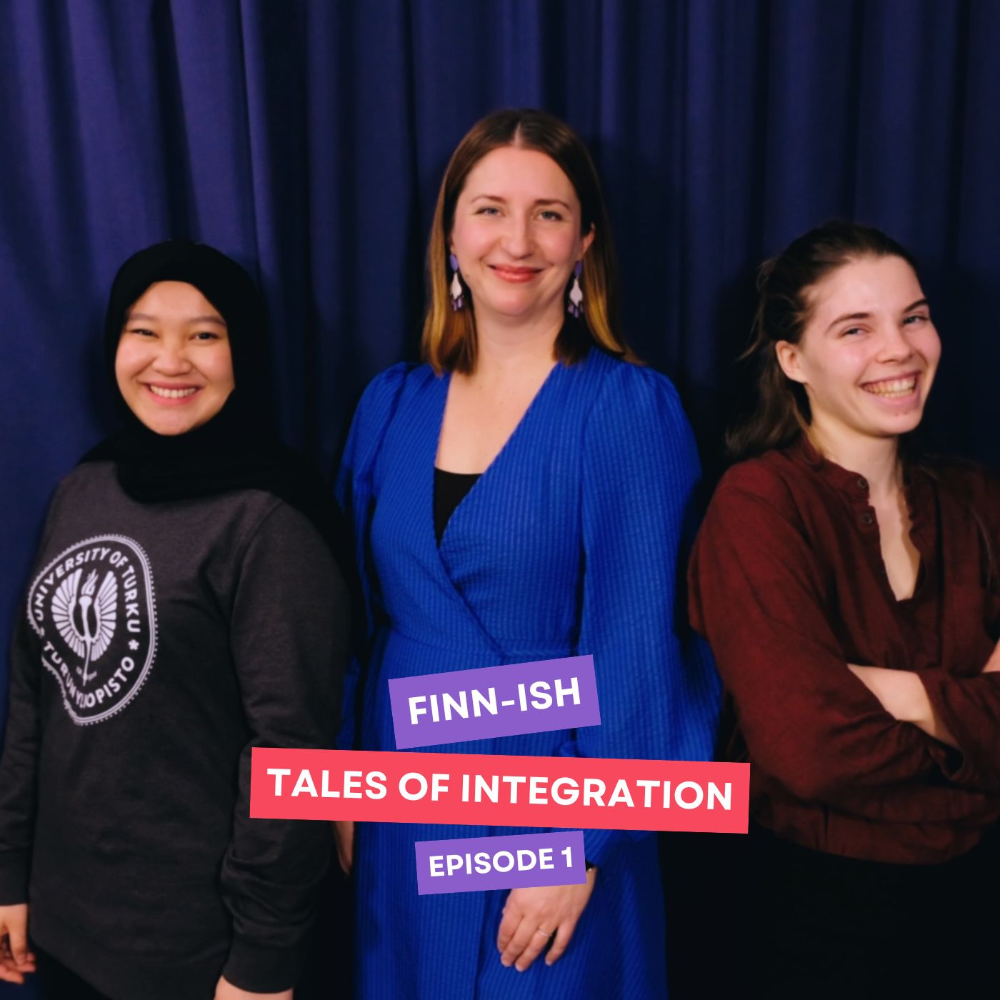

Featured Portfolio

The Vision for a Global Turku
FINN-ISH: Tales of Integration S1


With International House Turku
FINN-ISH: Tales of Integration S1


TYY's Role in Student Inclusion
FINN-ISH: Tales of Integration S2

Conversation with Vice Rector UTU
FINN-ISH: Tales of Integration S2


International & Finnish Students
FINN-ISH: Tales of Integration S2 | UNICOM+


Preparing Students for Job Market
FINN-ISH: Tales of Integration S2 | UNICOM+


Chaplain Services & Student Wellbeing
FINN-ISH: Tales of Integration S2


The Friendship Programme | Uni Turku
FINN-ISH: Tales of Integration S1


Navigating Finland Through Language
FINN-ISH: Tales of Integration S1